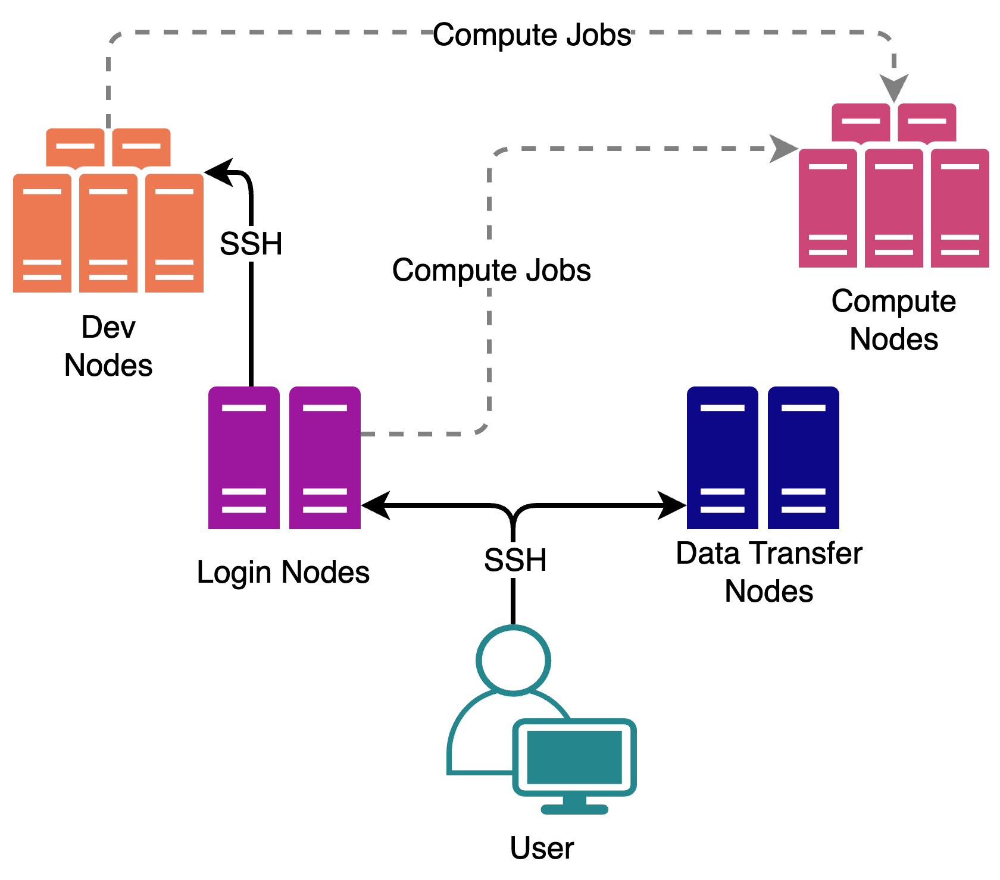
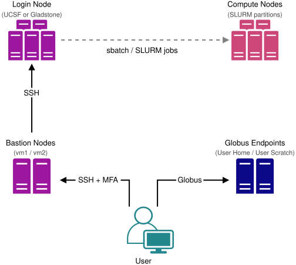

Migration Guide
Gladstone Bioinformatics Core
June 10, 2026
module system (module avail, module load)module load CBI r)miniforge3 module)| Topic | Wynton | CoreHPC |
|---|---|---|
| Scheduler | SGE | SLURM |
| Login | ssh into login node | bastion → login |
| Home | /wynton/home/$USER, 500 GB |
/home/remote/$USER, 20 GB |
| Scratch | /wynton/scratch/$USER |
/mnt/scratch/user/$USER |
| Hive | /gladstone/<lab> |
/mnt/gladstone/<pi>/<share> |
| Job defaults | yes | none; set all explicitly |
| GPU access | -q gpu.q + SGE_GPU |
--partition=... + --gres=... |


A bastion is a hardened gateway whose only job is to authenticate you and let you SSH onward. No storage or compute of its own.
Prerequisite: on Gladstone network (wired, Gladstone-MB, or Ivanti VPN), Gladstone device.
The CoreHPC login node is for job submission only, not prototyping. Anything you’d do on a Wynton dev node (compile, test scripts, interactive R/Python) becomes an interactive salloc session on CoreHPC.
For GPU dev work, add --partition=small_gpu (or large_gpu / pod) and --gres=gpu:nvidia_l40s:1.
ℹ️ salloc gives you a shell only. For browser-based RStudio Server or Jupyter (like Wynton’s dev nodes provide), Open OnDemand is coming to CoreHPC soon.
Home is only 20 GB. Push conda envs/pkgs onto scratch:
⚠️ Scratch is automatically purged periodically. Keep an environment.yml and a bootstrap script in your home directory (or HIVE) so you can rebuild quickly if files are purged:
For environments you will use long term it is recommended to use apptainer and store the .sif files on the HIVE. See the container guide.
| Wynton | CoreHPC |
|---|---|
/gladstone/<lab> |
/mnt/gladstone/<pi>/<share> |
/wynton/home/<lab>/<user> |
/home/remote/<user> (20 GB cap) |
/wynton/group/<lab> |
use your Hive mount, or scratch |
/wynton/scratch |
/mnt/scratch/user/$USER |
local /scratch |
local per-node scratch |
Hive share path translation:
\\hive.gladstone.internal\<PI>-<Share> becomes /mnt/gladstone/<pi>/<share>⚠️ Only HIVE (/mnt/gladstone) is backed up.
Already on HIVE: nothing to move. The same share is mounted on CoreHPC at /mnt/gladstone/<pi>/<share>.
On Wynton-only paths (/wynton/home, /wynton/scratch, /wynton/group): you have to migrate.
gsdt02) to copy your data onto your Hive lab share. CoreHPC then picks it up automatically at /mnt/gladstone/<pi>/<share>.gsdt02 does not connect to CoreHPC directly). Required for large or cross-institution moves since standard bastions block scp / rsync.A container packages your code with the exact versions of every tool it needs, so the analysis runs identically anywhere.
Dockerfile, or Apptainer .def).sif).sif and pulls directly from Docker)Build your own from a conda env: see the container guide.
The image runs identically. Only the submission script changes.
| Task | Wynton (SGE) | CoreHPC (SLURM) |
|---|---|---|
| Submit a job | qsub job.sh |
sbatch job.sh |
| Check your jobs | qstat |
squeue -u $USER |
| Cancel a job | qdel <jobid> |
scancel <jobid> |
| Wynton (SGE) | CoreHPC (SLURM) |
|---|---|
-l h_rt=02:00:00 |
--time=02:00:00 |
-pe smp 4 |
--cpus-per-task=4 |
-l mem_free=4G (per core) |
--mem=16G (per node) or --mem-per-cpu=4G |
-q <queue> |
--partition=<partition> |
-q gpu.q |
--gres=gpu:nvidia_l40s:1 |
-l scratch=2G |
no flag; write to local /scratch/$USER/job_$SLURM_JOB_ID |
-t 1-10, $SGE_TASK_ID |
--array=1-10, $SLURM_ARRAY_TASK_ID |
⚠️ SGE’s mem_free is per core; SLURM’s --mem is per node total.
Wynton (SGE)
CoreHPC (SLURM)
srun runs your command as a tracked SLURM “job step” (better accounting via sacct, required for multi-node/MPI)
| Code | State | When you see it |
|---|---|---|
| PD | Pending | Submitted, waiting for resources |
| R | Running | Actively executing on a compute node |
| CG | Completing | Wrapping up (briefly visible) |
| F | Failed | Exited non-zero (mostly visible via sacct) |
| TO | Timeout | Hit your --time wall limit |
| Partition | Use | Max per user |
|---|---|---|
cpu |
High-memory CPU (gcpu2 nodes) | 1 node, 42 CPUs/job |
small_gpu |
L40s 48 GB (ggpu1 nodes) | 1 running, 1 GPU |
large_gpu |
H200 single-node (ggpu3 nodes) | 1 running, 1 GPU |
pod* |
1/2 SuperPod, 8× H200 SXM | 1 running, 4 nodes max |
*pod is by request only and subject to PI / IT approval.
These queues and user limits may change in the future, check the current documentation for the most up-to-date partition information.
--gres=gpu:<model>:<count>: count is GPUs per node.
apptainer exec --nv ... (same as Wynton)module load cuda or module load nvidia/cuda/12.9.1#!/bin/bash
#SBATCH --job-name=gpu_example
#SBATCH --partition=small_gpu # 1 L40s = most single-GPU work
#SBATCH --gres=gpu:nvidia_l40s:1 # how many GPUs (start here: 1)
#SBATCH --ntasks=1
#SBATCH --cpus-per-task=32 # ~half a 2-GPU node = 1 GPU's share
#SBATCH --mem=180G # ~half the node's 384 GB
#SBATCH --time=04:00:00
#SBATCH --output=gpu_%j.out # %j = job ID
#SBATCH --error=gpu_%j.err
module load cuda
# Always track GPU utilization, log it for the life of the job
nvidia-smi --query-gpu=timestamp,utilization.gpu,memory.used,memory.total \
--format=csv --loop=10 > gpu_util_${SLURM_JOB_ID}.csv &
srun python train.pysmall_gpu node has ~64 CPUs / 384 GB across 2 L40s → up to ~32 CPUs / ~190 GB per GPU.salloc session. Batch-size search helper: find_batch_size.sh.nvidia-smi during the run, or seff <jobid> / sacct -j <jobid> after. Low utilization = wasted reservation (smaller request or larger batch).sacct -j <jobid>